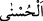
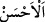
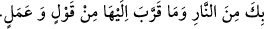

“İşte Rablerinin emrine uyanlar için en güzel (mükâfât) vardır.” Dünyada Allah’ın
kendilerini dâvet ettiği tevhîd ve tâate icâbet eden mü’minlere, âhirette en güzel
karşılık, yani cennet vardır. Sıfâtî cemâlin eserlerinden olması hasebiyle güzelliğin
zirvesinde olduğu için cennete “≈
(en güzel)” adı verilmiştir. “
(en güzel
varlık)” ise Allah Teâlâ’dır. O’nun ezelî güzelliği başka bir varlıktan değil bizzat
kendisindendir.
Böylece anlaşıldı ki “en güzel”’e dâvet eden Allah Teâlâ’dır. Bu ilâhî dâvete icâbet
edenler ise mü’minlerdir. Cennet ve nimetleri de misafirlere ikram edilen en büyük
ziyafettir. Bir hadiste şöyle buyrulmuştur:
Allah’ım! Senden cenneti ve ona yaklaştıracak söz ve davranışlar da bulunmamı
sağlamanı niyâz ediyorum. Cehennemden
ve ona yaklaştıracak söz ve davranışlarda bulunmaktan sana sığınıyorum.”[121]
Büyüklerden biri de şöyle demiştir: “Allah’ı görmeyi arzu eden, cenneti de arzu eder.
Çünkü Allah cennette görülecektir.”
Fakir (Bursevî) der ki: Bu ifade cennetin Allah’ın mahalli değil, Allah’ı görmenin
mahalli olduğunu açıkça belirtmektedir. Bu bakımdan Allah’a mekân isnad edilmiş
olmamaktadır. Ayrıca cennetin Allah’ı görme mahalli olmasından bizzat Allah’ın
mahalli olması lâzım gelmez. Çünkü, mekânla sınırlanma, görülenin hâli değil görenin
hâlidir. Dünya da âhiret de görülene nisbetle aynı olduğu gibi görene nisbetle de
aynıdır. Çünkü, Allah Teâlâ mâniaların kalkmasıyla dünyada görülecek olsa O’nun
mutlaklığına ve münezzehliğine halel gelmez. Cennette görüldüğü takdirde de durum
aynıdır.
“O’na uymayanlara” yani Allah’ı inkâr edenlere ve tâatten ayrılanlara “gelince,
eğer yeryüzünde olanların tümü” bütün nakit eşya ve akarlar “ile bunun yanında bir
misli daha kendilerinin olsa,” yani, dünyada ne kadar para ve kumaş varsa, onlara tüm
dünya malını ilave etseler ve bunların hepsi kâfirlerin tasarrufunda olsa kendilerini
azâbdan kurtarmak için “onu mutlaka fedâ ederlerdi.” Ama verseler de yine kabul
edilmezdi.
Fakîr (Bursevî) der ki: Bunun sırrı şudur: Onlar dünya yüzünden Allah Teâlâ’dan
gâfil oldular. Ölüp tekrar diriltildikten sonra bu gafletten uyandıkları zaman gözlerinde
dünyanın da dünyalıkların da hiçbir değeri kalmaz. Güçleri yetse onların tamamını
verip onların yerine Allah Teâlâ’nın rızâsını almak isterler. Ancak onlar kabul vaktinde
kusurlu davranmışlar, artık dînar ve dirhemin olmadığı zamanda bulundukları boş
temennîlerde bulunmuşlardır.